Homework 3 - Logan River:
The Bear River and Bear Lake Story

Climate (Precipitation and Temperature)
The below figures were made by importing the _.tif files into a Jupyter Notebook, then using a combination of
Matplotlib and Numpy to build the figures and calculate the basin wide averages.

Geology
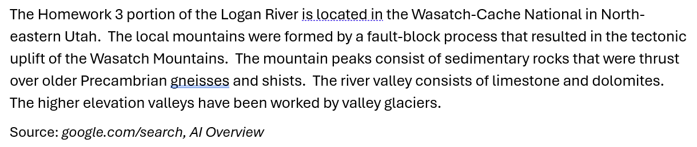
Ecoregions and Plant Communities
The Central Basin and Range community types are located in the Northwestern Forested Mountains ecoregion while
the Wasatch and Uinta Mountains community types are located in the North American Deserts ecoregion.
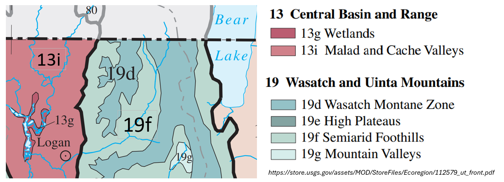
Riparian Zone Plants
Although the watershed plant communites, including their abundance and health, have an influence on the runoff hydrograph,
it is the riparian zone plants that often directly influence the river's morphology. The Utah State University Forestry Extension
and the Logan River Restoration & Task Force provide a list of recommended plants and a planting guidebook
(https://extension.usu.edu/forestry/trees-cities-towns/urban-forestry/logan-river-plant-guide) to help guide restoration efforts.
Long Profile
The long profile chases the Logan from the Cache Valley to Beaver Creek, the up Beaver Creek.
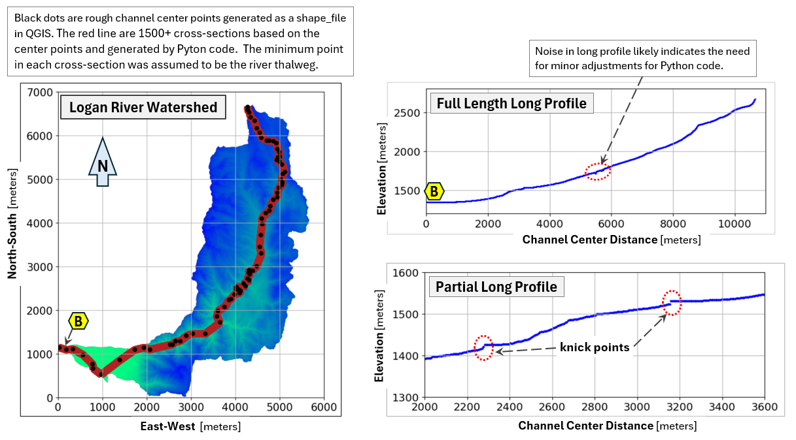
Base Level Control
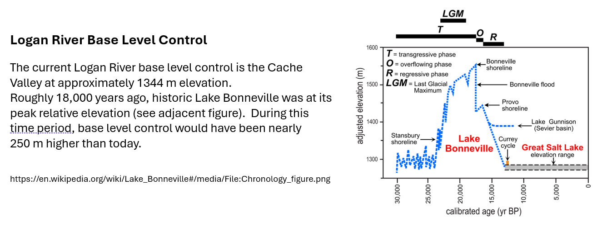
Morphometrics
Methods (Python code) and Results:
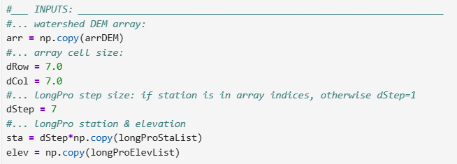
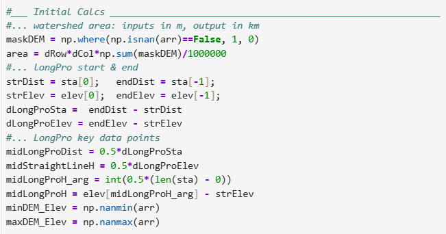
#___ Parameter Calcs _______________________________________________
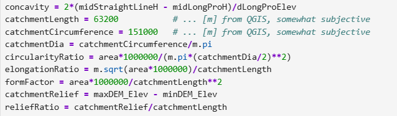
#___ Results ________________________________________________________________________
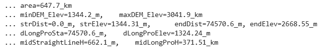
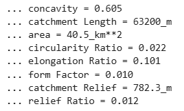
Drainage Density and Pattern
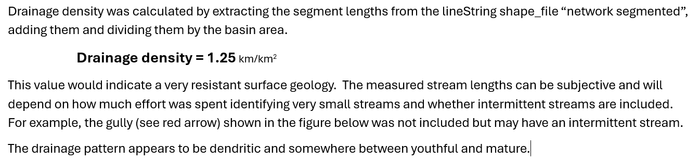
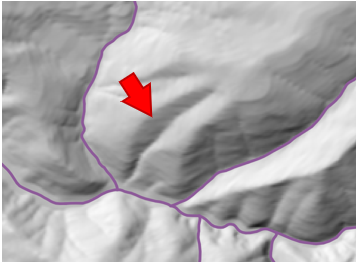
Hypsometric Curve

Stream Order
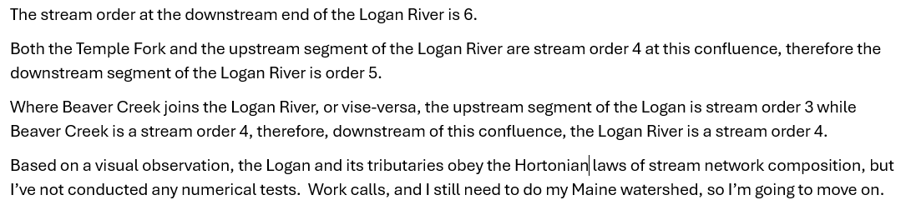
Middle Branch Pleasant River, Maine